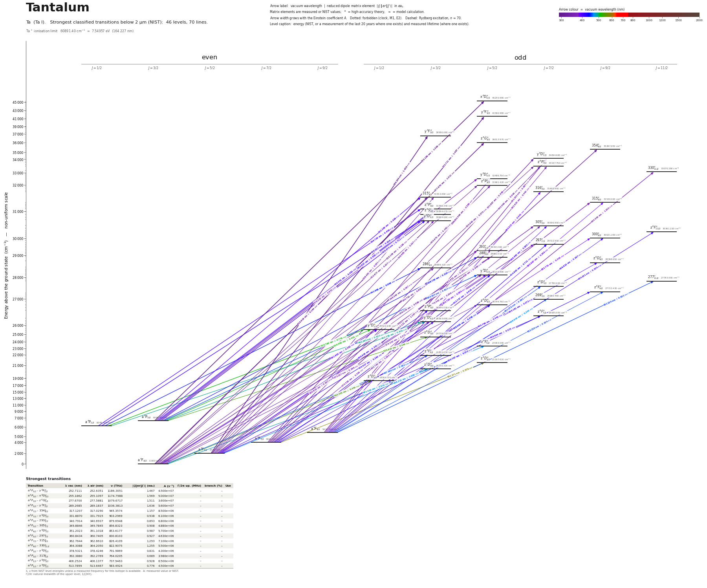

Tantalum energy level diagram
Energy levels and transitions of neutral tantalum (Ta I): the 90 strongest classified lines below 2 µm from the NIST Atomic Spectra Database and the 55 levels they connect, each line with its vacuum wavelength, frequency and, for 89 of them, the reduced dipole matrix element derived from the NIST transition rate. Measured lifetimes, transition rates, hyperfine constants and isotope shifts from the literature are included, each with its citation.
Hover a line or a level to isolate it, click to keep it selected. Scroll to zoom, drag to move.

Download: diagram (PDF) diagram (SVG) transitions (CSV) levels (CSV) source code

Key transitions of tantalum
| Transition | λ vac (nm) | λ air (nm) | ν (THz) | |⟨J‖er‖J′⟩| (ea₀) | A (s⁻¹) | Γ/2π up. (MHz) | branch (%) | Use |
|---|---|---|---|---|---|---|---|---|
| a 4P5/2 – z 6D°5/2 | 570.0822 | 569.9241 | 525.8758 | 0.478 | 4.167e+05 | 1.408 | 4.6 | hyperfine-structure spectroscopy line |
| a 4P1/2 – z 6F°1/2 | 577.8346 | 577.6744 | 518.8205 | – | – | – | – | hyperfine-structure spectroscopy line |
| a 4P3/2 – z 4F°5/2 | 578.2292 | 578.0689 | 518.4665 | 0.437 | 3.333e+05 | 0.4081 | 13 | hyperfine-structure spectroscopy line |
| a 6D9/2 – z 6F°11/2 | 587.8974 | 587.7345 | 509.9401 | 1.676 | 2.333e+06 | 0.5235 | 72 | hyperfine-structure spectroscopy line |
λ, ν from NIST level energies unless a measured frequency for this isotope is available. A: measured value or NIST. Γ/2π: natural linewidth of the upper level, 1/(2πτ).
181Ta hyperfine structure (I = 7/2)
| Level | A (MHz) | B (MHz) | Shift of each F level from the centre of gravity (MHz) |
|---|---|---|---|
| a 4P1/2 | 879(10) | – | F=3: -1977.75 F=4: +1538.25 |
| a 4P3/2 | 378(10) | -1349(20) | F=2: -3274.18 F=3: -1176.61 F=4: +720.82 F=5: +1647.25 |
| a 4P5/2 | 251(10) | 1670(20) | F=1: -1929.11 F=2: -1904.25 F=3: -1688.04 F=4: -1065.75 F=5: +248.89 F=6: +2613.75 |
| a 6D9/2 | 1089(10) | – | F=1: -20963.25 F=2: -18785.25 F=3: -15518.25 F=4: -11162.25 F=5: -5717.25 F=6: +816.75 F=7: +8439.75 F=8: +17151.75 |
| z 6F°1/2 | -1771(10) | – | F=3: +3984.75 F=4: -3099.25 |
| z 4F°5/2 | 480(10) | -19(20) | F=1: -5410.18 F=2: -4444.75 F=3: -2998.64 F=4: -1074.30 F=5: +1325.02 F=6: +4195.25 |
| z 6D°5/2 | 1033(10) | 688(20) | F=1: -11252.68 F=2: -9383.25 F=3: -6505.39 F=4: -2530.65 F=5: +2658.92 F=6: +9210.75 |
| z 6F°11/2 | 669(10) | 60(20) | F=2: -15194.93 F=3: -13197.75 F=4: -10532.66 F=5: -7197.79 F=6: -3190.80 F=7: +1491.11 F=8: +6851.21 F=9: +12893.25 |
Measured A, B constants; sources in the data file.
Listed Ta transitions below 2 µm
| Lower level | Upper level | λ vacuum (nm) | λ air (nm) | ν (THz) | Type | |⟨J‖er‖J′⟩| (ea₀) | A (s⁻¹) | Branching (%) | Source of matrix element / A |
|---|---|---|---|---|---|---|---|---|---|
| a 4F5/2 | y 6F°5/2 | 252.7111 | 252.6351 | 1186.3051 | E1 (intercombination) | 1.467 NIST | 4.500e+07 NIST | – | NIST ASD (accuracy D+) |
| a 4P3/2 | x 6D°5/2 | 255.1862 | 255.1097 | 1174.7988 | E1 (intercombination) | 1.569 NIST | 5.000e+07 NIST | – | NIST ASD (accuracy D+) |
| a 4F3/2 | z 4G°5/2 | 277.6700 | 277.5881 | 1079.6717 | E1 | 1.511 NIST | 3.600e+07 NIST | – | NIST ASD (accuracy C+) |
| a 4F5/2 | y 4F°3/2 | 289.2685 | 289.1837 | 1036.3813 | E1 | 1.636 NIST | 5.600e+07 NIST | – | NIST ASD (accuracy C+) |
| a 4F3/2 | z 6P°5/2 | 312.8772 | 312.7865 | 958.1793 | E1 (intercombination) | 0.227 measured | 5.667e+05 measured | 4.7 | Den Hartog, Duquette, Lawler, J. Opt. Soc. Am. B 4, 48 (1987), Table 1 |
| a 4F3/2 | 315°3/2 | 316.9181 | 316.8264 | 945.9618 | E1 (intercombination) | 0.194 measured | 6.000e+05 measured | 5.8 | Den Hartog, Duquette, Lawler, J. Opt. Soc. Am. B 4, 48 (1987), Table 1 |
| a 4F7/2 | 354°9/2 | 317.1207 | 317.0290 | 945.3574 | E1 (intercombination) | 1.157 measured | 8.500e+06 measured | 46.5 | Den Hartog, Duquette, Lawler, J. Opt. Soc. Am. B 4, 48 (1987), Table 1 |
| a 4F5/2 | z 6P°7/2 | 320.6397 | 320.5471 | 934.9822 | E1 (intercombination) | 0.271 measured | 5.625e+05 measured | 3.6 | Den Hartog, Duquette, Lawler, J. Opt. Soc. Am. B 4, 48 (1987), Table 1 |
| a 4F3/2 | y 6D°3/2 | 326.1083 | 326.0143 | 919.3034 | E1 (intercombination) | 0.198 measured | 5.750e+05 measured | 3.3 | Den Hartog, Duquette, Lawler, J. Opt. Soc. Am. B 4, 48 (1987), Table 1 |
| a 4F7/2 | y 6D°7/2 | 331.8870 | 331.7915 | 903.2969 | E1 (intercombination) | 0.938 NIST | 6.100e+06 NIST | – | NIST ASD (accuracy C) |
| a 4F5/2 | z 6P°5/2 | 333.8751 | 333.7791 | 897.9180 | E1 (intercombination) | 0.381 measured | 1.317e+06 measured | 10.8 | Den Hartog, Duquette, Lawler, J. Opt. Soc. Am. B 4, 48 (1987), Table 1 |
| a 4F5/2 | 315°3/2 | 338.4806 | 338.3834 | 885.7005 | E1 (intercombination) | 0.201 measured | 5.250e+05 measured | 5.2 | Den Hartog, Duquette, Lawler, J. Opt. Soc. Am. B 4, 48 (1987), Table 1 |
| a 4F3/2 | 293°5/2 | 340.7914 | 340.6937 | 879.6948 | E1 (intercombination) | 0.895 measured | 6.833e+06 measured | 67.4 | Den Hartog, Duquette, Lawler, J. Opt. Soc. Am. B 4, 48 (1987), Table 1 |
| a 4F7/2 | z 6P°7/2 | 342.0694 | 341.9714 | 876.4082 | E1 (intercombination) | 0.550 measured | 1.912e+06 measured | 12.1 | Den Hartog, Duquette, Lawler, J. Opt. Soc. Am. B 4, 48 (1987), Table 1 |
| a 4F3/2 | 288°5/2 | 346.4762 | 346.3770 | 865.2613 | E1 (intercombination) | 0.568 measured | 2.617e+06 measured | 47.2 | Den Hartog, Duquette, Lawler, J. Opt. Soc. Am. B 4, 48 (1987), Table 1 |
| a 4F3/2 | 286°3/2 | 348.5619 | 348.4621 | 860.0839 | E1 (intercombination) | 0.267 measured | 8.500e+05 measured | 11.6 | Den Hartog, Duquette, Lawler, J. Opt. Soc. Am. B 4, 48 (1987), Table 1 |
| a 4F5/2 | y 6D°3/2 | 348.9846 | 348.8847 | 859.0421 | E1 (intercombination) | 0.247 measured | 7.250e+05 measured | 4.2 | Den Hartog, Duquette, Lawler, J. Opt. Soc. Am. B 4, 48 (1987), Table 1 |
| a 4F5/2 | 305°7/2 | 349.8846 | 349.7845 | 856.8323 | E1 (intercombination) | 0.908 measured | 4.875e+06 measured | 67.6 | Den Hartog, Duquette, Lawler, J. Opt. Soc. Am. B 4, 48 (1987), Table 1 |
| a 4F7/2 | y 6D°5/2 | 350.5963 | 350.4961 | 855.0929 | E1 (intercombination) | 0.589 measured | 2.717e+06 measured | 16.4 | Den Hartog, Duquette, Lawler, J. Opt. Soc. Am. B 4, 48 (1987), Table 1 |
| a 4F9/2 | y 6D°7/2 | 351.2023 | 351.1018 | 853.6177 | E1 (intercombination) | 0.987 NIST | 5.700e+06 NIST | – | NIST ASD (accuracy D+) |
| a 4F3/2 | y 4D°5/2 | 355.4433 | 355.3418 | 843.4325 | E1 | 0.210 measured | 3.333e+05 measured | 5.3 | Den Hartog, Duquette, Lawler, J. Opt. Soc. Am. B 4, 48 (1987), Table 1 |
| a 4F5/2 | 297°7/2 | 360.8434 | 360.7405 | 830.8103 | E1 (intercombination) | 0.926 measured | 4.625e+06 measured | 59 | Den Hartog, Duquette, Lawler, J. Opt. Soc. Am. B 4, 48 (1987), Table 1 |
| a 4F9/2 | z 6P°7/2 | 362.6248 | 362.5215 | 826.7290 | E1 (intercombination) | 0.439 measured | 1.025e+06 measured | 6.5 | Den Hartog, Duquette, Lawler, J. Opt. Soc. Am. B 4, 48 (1987), Table 1 |
| a 4F7/2 | 315°9/2 | 362.7644 | 362.6610 | 826.4109 | E1 (intercombination) | 1.293 measured | 7.100e+06 measured | 87 | Den Hartog, Duquette, Lawler, J. Opt. Soc. Am. B 4, 48 (1987), Table 1 |
| a 4F9/2 | 330°11/2 | 364.3088 | 364.2050 | 822.9075 | E1 (intercombination) | 1.255 measured | 5.500e+06 measured | 95.7 | Den Hartog, Duquette, Lawler, J. Opt. Soc. Am. B 4, 48 (1987), Table 1 |
| a 4F5/2 | 293°5/2 | 365.8533 | 365.7491 | 819.4335 | E1 (intercombination) | 0.251 measured | 4.333e+05 measured | 4.2 | Den Hartog, Duquette, Lawler, J. Opt. Soc. Am. B 4, 48 (1987), Table 1 |
| a 4F3/2 | z 6D°5/2 | 373.2073 | 373.1012 | 803.2867 | E1 (intercombination) | 0.286 measured | 5.333e+05 measured | 6.1 | Den Hartog, Duquette, Lawler, J. Opt. Soc. Am. B 4, 48 (1987), Table 1 |
| a 4F7/2 | 305°7/2 | 375.5582 | 375.4515 | 798.2583 | E1 (intercombination) | 0.369 measured | 6.500e+05 measured | 9.1 | Den Hartog, Duquette, Lawler, J. Opt. Soc. Am. B 4, 48 (1987), Table 1 |
| a 4P3/2 | y 6D°5/2 | 378.5321 | 378.4246 | 791.9869 | E1 (intercombination) | 0.834 measured | 4.333e+06 measured | 26.6 | Den Hartog, Duquette, Lawler, J. Opt. Soc. Am. B 4, 48 (1987), Table 1 |
| a 4F3/2 | y 4D°3/2 | 379.3096 | 379.2019 | 790.3635 | E1 | 0.311 measured | 9.000e+05 measured | 11.6 | Den Hartog, Duquette, Lawler, J. Opt. Soc. Am. B 4, 48 (1987), Table 1 |
| a 4F5/2 | y 4D°5/2 | 382.7930 | 382.6844 | 783.1712 | E1 | 0.293 measured | 5.167e+05 measured | 8 | Den Hartog, Duquette, Lawler, J. Opt. Soc. Am. B 4, 48 (1987), Table 1 |
| a 4F7/2 | 300°9/2 | 383.7699 | 383.6611 | 781.1776 | E1 (intercombination) | 0.334 measured | 4.000e+05 measured | 9.6 | Den Hartog, Duquette, Lawler, J. Opt. Soc. Am. B 4, 48 (1987), Table 1 |
| a 4F9/2 | 316°7/2 | 384.9128 | 384.8037 | 778.8581 | E1 (intercombination) | 0.541 measured | 1.300e+06 measured | 13.8 | Den Hartog, Duquette, Lawler, J. Opt. Soc. Am. B 4, 48 (1987), Table 1 |
| a 4F9/2 | 315°9/2 | 385.9666 | 385.8572 | 776.7317 | E1 (intercombination) | 0.266 measured | 2.500e+05 measured | 3.1 | Den Hartog, Duquette, Lawler, J. Opt. Soc. Am. B 4, 48 (1987), Table 1 |
| a 4F3/2 | y 4D°1/2 | 391.9627 | 391.8518 | 764.8494 | E1 | 0.382 measured | 2.450e+06 measured | 27.6 | Den Hartog, Duquette, Lawler, J. Opt. Soc. Am. B 4, 48 (1987), Table 1 |
| a 4P3/2 | 315°3/2 | 392.3880 | 392.2769 | 764.0205 | E1 (intercombination) | 0.689 measured | 3.975e+06 measured | 38.5 | Den Hartog, Duquette, Lawler, J. Opt. Soc. Am. B 4, 48 (1987), Table 1 |
| a 4P1/2 | z 6P°3/2 | 399.7295 | 399.6165 | 749.9884 | E1 (intercombination) | 0.650 measured | 3.350e+06 measured | 18.1 | Den Hartog, Duquette, Lawler, J. Opt. Soc. Am. B 4, 48 (1987), Table 1 |
| a 4P3/2 | z 6P°3/2 | 400.0411 | 399.9280 | 749.4041 | E1 (intercombination) | 0.480 measured | 1.825e+06 measured | 9.9 | Den Hartog, Duquette, Lawler, J. Opt. Soc. Am. B 4, 48 (1987), Table 1 |
| a 4F9/2 | 305°7/2 | 400.4820 | 400.3688 | 748.5791 | E1 (intercombination) | 0.281 measured | 3.125e+05 measured | 4.4 | Den Hartog, Duquette, Lawler, J. Opt. Soc. Am. B 4, 48 (1987), Table 1 |
| a 4F5/2 | 269°7/2 | 400.7958 | 400.6825 | 747.9930 | E1 (intercombination) | 0.440 measured | 7.625e+05 measured | 21.8 | Den Hartog, Duquette, Lawler, J. Opt. Soc. Am. B 4, 48 (1987), Table 1 |
| a 4P3/2 | z 4S°3/2 | 402.8074 | 402.6936 | 744.2576 | E1 | 0.681 measured | 3.600e+06 measured | 27.2 | Den Hartog, Duquette, Lawler, J. Opt. Soc. Am. B 4, 48 (1987), Table 1 |
| a 2G9/2 | 354°9/2 | 403.1067 | 402.9928 | 743.7050 | E1 (intercombination) | 0.951 measured | 2.800e+06 measured | 14.9 | Den Hartog, Duquette, Lawler, J. Opt. Soc. Am. B 4, 48 (1987), Table 1 |
| a 4F7/2 | z 6D°9/2 | 403.1814 | 403.0675 | 743.5671 | E1 (intercombination) | 0.273 measured | 2.300e+05 measured | 3.2 | Den Hartog, Duquette, Lawler, J. Opt. Soc. Am. B 4, 48 (1987), Table 1 |
| a 4F9/2 | z 6F°11/2 | 404.2008 | 404.0866 | 741.6919 | E1 (intercombination) | 0.535 measured | 7.333e+05 measured | 22.3 | Den Hartog, Duquette, Lawler, J. Opt. Soc. Am. B 4, 48 (1987), Table 1 |
| a 4P1/2 | y 6D°3/2 | 406.2524 | 406.1377 | 737.9463 | E1 (intercombination) | 0.928 measured | 6.500e+06 measured | 37.8 | Den Hartog, Duquette, Lawler, J. Opt. Soc. Am. B 4, 48 (1987), Table 1 |
| a 4P3/2 | y 6D°3/2 | 406.5743 | 406.4595 | 737.3620 | E1 (intercombination) | 0.712 measured | 3.825e+06 measured | 22.2 | Den Hartog, Duquette, Lawler, J. Opt. Soc. Am. B 4, 48 (1987), Table 1 |
| a 4F5/2 | z 4P°3/2 | 406.8360 | 406.7211 | 736.8878 | E1 | 0.300 measured | 6.750e+05 measured | 11.7 | Den Hartog, Duquette, Lawler, J. Opt. Soc. Am. B 4, 48 (1987), Table 1 |
| a 4F5/2 | z 6F°7/2 | 406.9039 | 406.7890 | 736.7649 | E1 (intercombination) | 0.472 measured | 8.375e+05 measured | 21.8 | Den Hartog, Duquette, Lawler, J. Opt. Soc. Am. B 4, 48 (1987), Table 1 |
| a 4F9/2 | 300°9/2 | 409.8334 | 409.7177 | 731.4984 | E1 (intercombination) | 0.267 measured | 2.100e+05 measured | 5.1 | Den Hartog, Duquette, Lawler, J. Opt. Soc. Am. B 4, 48 (1987), Table 1 |
| a 4F5/2 | y 4D°3/2 | 410.6171 | 410.5012 | 730.1023 | E1 | 0.392 measured | 1.125e+06 measured | 14.4 | Den Hartog, Duquette, Lawler, J. Opt. Soc. Am. B 4, 48 (1987), Table 1 |
| a 4F7/2 | y 4D°5/2 | 413.7367 | 413.6201 | 724.5972 | E1 | 0.617 measured | 1.817e+06 measured | 28.8 | Den Hartog, Duquette, Lawler, J. Opt. Soc. Am. B 4, 48 (1987), Table 1 |
| a 4F9/2 | 297°7/2 | 414.9049 | 414.7879 | 722.5571 | E1 (intercombination) | 0.710 measured | 1.787e+06 measured | 23 | Den Hartog, Duquette, Lawler, J. Opt. Soc. Am. B 4, 48 (1987), Table 1 |
| a 4P5/2 | z 6P°7/2 | 417.6356 | 417.5179 | 717.8326 | E1 (intercombination) | 0.889 measured | 2.750e+06 measured | 17.1 | Den Hartog, Duquette, Lawler, J. Opt. Soc. Am. B 4, 48 (1987), Table 1 |
| a 4F7/2 | z 6F°9/2 | 420.7070 | 420.5885 | 712.5920 | E1 (intercombination) | 0.572 measured | 8.900e+05 measured | 23.6 | Den Hartog, Duquette, Lawler, J. Opt. Soc. Am. B 4, 48 (1987), Table 1 |
| a 4F7/2 | z 6D°5/2 | 438.0040 | 437.8810 | 684.4514 | E1 (intercombination) | 0.347 measured | 4.833e+05 measured | 5.4 | Den Hartog, Duquette, Lawler, J. Opt. Soc. Am. B 4, 48 (1987), Table 1 |
| a 4P3/2 | 288°5/2 | 438.7293 | 438.6060 | 683.3199 | E1 (intercombination) | 0.508 measured | 1.033e+06 measured | 18.5 | Den Hartog, Duquette, Lawler, J. Opt. Soc. Am. B 4, 48 (1987), Table 1 |
| a 4P1/2 | 286°3/2 | 441.6983 | 441.5742 | 678.7268 | E1 (intercombination) | 0.655 measured | 2.525e+06 measured | 34.7 | Den Hartog, Duquette, Lawler, J. Opt. Soc. Am. B 4, 48 (1987), Table 1 |
| a 4F9/2 | 277°11/2 | 451.2236 | 451.0971 | 664.3989 | E1 (intercombination) | 0.921 measured | 1.558e+06 measured | 59.2 | Den Hartog, Duquette, Lawler, J. Opt. Soc. Am. B 4, 48 (1987), Table 1 |
| a 4F9/2 | z 6D°7/2 | 451.2721 | 451.1456 | 664.3275 | E1 (intercombination) | 0.363 measured | 3.625e+05 measured | 4.3 | Den Hartog, Duquette, Lawler, J. Opt. Soc. Am. B 4, 48 (1987), Table 1 |
| a 4F9/2 | z 6F°9/2 | 452.2351 | 452.1084 | 662.9128 | E1 (intercombination) | 0.324 measured | 2.300e+05 measured | 6.2 | Den Hartog, Duquette, Lawler, J. Opt. Soc. Am. B 4, 48 (1987), Table 1 |
| a 4P3/2 | y 4D°5/2 | 453.2071 | 453.0800 | 661.4912 | E1 | 0.816 measured | 2.417e+06 measured | 38.2 | Den Hartog, Duquette, Lawler, J. Opt. Soc. Am. B 4, 48 (1987), Table 1 |
| a 4F3/2 | z 4F°3/2 | 457.5597 | 457.4315 | 655.1985 | E1 | 0.481 measured | 1.225e+06 measured | 55.2 | Den Hartog, Duquette, Lawler, J. Opt. Soc. Am. B 4, 48 (1987), Table 1 |
| a 4P5/2 | z 4S°3/2 | 462.0807 | 461.9513 | 648.7880 | E1 | 1.011 measured | 5.250e+06 measured | 39.6 | Den Hartog, Duquette, Lawler, J. Opt. Soc. Am. B 4, 48 (1987), Table 1 |
| a 4P5/2 | y 6D°3/2 | 467.0446 | 466.9139 | 641.8925 | E1 (intercombination) | 0.757 measured | 2.850e+06 measured | 16.5 | Den Hartog, Duquette, Lawler, J. Opt. Soc. Am. B 4, 48 (1987), Table 1 |
| a 4F5/2 | z 4F°5/2 | 468.3185 | 468.1874 | 640.1465 | E1 | 0.679 measured | 1.517e+06 measured | 59.5 | Den Hartog, Duquette, Lawler, J. Opt. Soc. Am. B 4, 48 (1987), Table 1 |
| a 4F9/2 | 269°7/2 | 468.6163 | 468.4852 | 639.7397 | E1 (intercombination) | 0.334 measured | 2.750e+05 measured | 7.8 | Den Hartog, Duquette, Lawler, J. Opt. Soc. Am. B 4, 48 (1987), Table 1 |
| a 6D1/2 | z 6P°3/2 | 469.3212 | 469.1899 | 638.7789 | E1 | 0.912 measured | 4.075e+06 measured | 22 | Den Hartog, Duquette, Lawler, J. Opt. Soc. Am. B 4, 48 (1987), Table 1 |
| a 6D3/2 | z 6P°3/2 | 474.1465 | 474.0139 | 632.2782 | E1 | 1.026 measured | 5.000e+06 measured | 27.3 | Den Hartog, Duquette, Lawler, J. Opt. Soc. Am. B 4, 48 (1987), Table 1 |
| a 6D7/2 | z 6P°7/2 | 477.0312 | 476.8978 | 628.4546 | E1 | 1.086 measured | 2.750e+06 measured | 17.5 | Den Hartog, Duquette, Lawler, J. Opt. Soc. Am. B 4, 48 (1987), Table 1 |
| a 4F3/2 | z 2D°3/2 | 481.4099 | 481.2754 | 622.7385 | E1 (intercombination) | 0.514 measured | 1.200e+06 measured | 82.2 | Den Hartog, Duquette, Lawler, J. Opt. Soc. Am. B 4, 48 (1987), Table 1 |
| a 6D5/2 | z 6P°5/2 | 482.6770 | 482.5421 | 621.1037 | E1 | 0.936 measured | 2.633e+06 measured | 21.4 | Den Hartog, Duquette, Lawler, J. Opt. Soc. Am. B 4, 48 (1987), Table 1 |
| a 4P1/2 | y 4D°3/2 | 492.2648 | 492.1274 | 609.0065 | E1 | 0.526 measured | 1.175e+06 measured | 15 | Den Hartog, Duquette, Lawler, J. Opt. Soc. Am. B 4, 48 (1987), Table 1 |
| a 4P3/2 | y 4D°3/2 | 492.7375 | 492.6000 | 608.4222 | E1 | 0.600 measured | 1.525e+06 measured | 19.5 | Den Hartog, Duquette, Lawler, J. Opt. Soc. Am. B 4, 48 (1987), Table 1 |
| a 6D7/2 | y 6D°5/2 | 493.7786 | 493.6408 | 607.1394 | E1 | 1.267 measured | 4.500e+06 measured | 26.9 | Den Hartog, Duquette, Lawler, J. Opt. Soc. Am. B 4, 48 (1987), Table 1 |
| a 6D9/2 | z 6P°7/2 | 503.8723 | 503.7318 | 594.9771 | E1 | 1.487 measured | 4.375e+06 measured | 28 | Den Hartog, Duquette, Lawler, J. Opt. Soc. Am. B 4, 48 (1987), Table 1 |
| a 6D5/2 | z 6P°3/2 | 504.4719 | 504.3313 | 594.2699 | E1 | 0.831 measured | 2.725e+06 measured | 14.7 | Den Hartog, Duquette, Lawler, J. Opt. Soc. Am. B 4, 48 (1987), Table 1 |
| a 6D7/2 | z 6P°5/2 | 506.9282 | 506.7869 | 591.3904 | E1 | 1.061 measured | 2.917e+06 measured | 23.8 | Den Hartog, Duquette, Lawler, J. Opt. Soc. Am. B 4, 48 (1987), Table 1 |
| a 4P1/2 | y 4D°1/2 | 513.7899 | 513.6467 | 583.4924 | E1 | 0.776 measured | 4.500e+06 measured | 50.4 | Den Hartog, Duquette, Lawler, J. Opt. Soc. Am. B 4, 48 (1987), Table 1 |
| a 4P3/2 | y 4D°1/2 | 514.3049 | 514.1616 | 582.9081 | E1 | 0.401 measured | 1.200e+06 measured | 13.7 | Den Hartog, Duquette, Lawler, J. Opt. Soc. Am. B 4, 48 (1987), Table 1 |
| a 4P3/2 | z 6D°3/2 | 535.6152 | 535.4663 | 559.7161 | E1 (intercombination) | 0.444 measured | 6.500e+05 measured | 11.1 | Den Hartog, Duquette, Lawler, J. Opt. Soc. Am. B 4, 48 (1987), Table 1 |
| a 4F3/2 | z 4D°1/2 | 540.4027 | 540.2525 | 554.7576 | E1 | 0.459 measured | 1.350e+06 measured | 75.8 | Den Hartog, Duquette, Lawler, J. Opt. Soc. Am. B 4, 48 (1987), Table 1 |
| a 2F7/2 | 354°9/2 | 552.0430 | 551.8897 | 543.0599 | E1 (intercombination) | 1.776 measured | 3.800e+06 measured | 20.8 | Den Hartog, Duquette, Lawler, J. Opt. Soc. Am. B 4, 48 (1987), Table 1 |
| a 4P5/2 | z 6D°5/2 | 570.0822 | 569.9241 | 525.8758 | E1 (intercombination) | 0.478 measured | 4.167e+05 measured | 4.6 | Den Hartog, Duquette, Lawler, J. Opt. Soc. Am. B 4, 48 (1987), Table 1 |
| a 4P1/2 | z 6F°1/2 | 577.8346 | 577.6744 | 518.8205 | E1 (intercombination) | – | – | – | – |
| a 4P3/2 | z 4F°5/2 | 578.2292 | 578.0689 | 518.4665 | E1 | 0.437 measured | 3.333e+05 measured | 13 | Den Hartog, Duquette, Lawler, J. Opt. Soc. Am. B 4, 48 (1987), Table 1 |
| a 4F7/2 | z 4D°5/2 | 581.2706 | 581.1095 | 515.7536 | E1 | 0.574 measured | 5.667e+05 measured | 51.6 | Den Hartog, Duquette, Lawler, J. Opt. Soc. Am. B 4, 48 (1987), Table 1 |
| a 6D9/2 | z 6F°11/2 | 587.8974 | 587.7345 | 509.9401 | E1 | 1.676 measured | 2.333e+06 measured | 72 | Den Hartog, Duquette, Lawler, J. Opt. Soc. Am. B 4, 48 (1987), Table 1 |
| a 6D5/2 | z 6D°7/2 | 604.7050 | 604.5376 | 495.7665 | E1 | 1.514 measured | 2.625e+06 measured | 30.8 | Den Hartog, Duquette, Lawler, J. Opt. Soc. Am. B 4, 48 (1987), Table 1 |
| a 6D7/2 | z 6D°7/2 | 643.2581 | 643.0803 | 466.0532 | E1 | 1.738 measured | 2.875e+06 measured | 34.1 | Den Hartog, Duquette, Lawler, J. Opt. Soc. Am. B 4, 48 (1987), Table 1 |
| a 6D9/2 | z 6D°9/2 | 648.7104 | 648.5311 | 462.1361 | E1 | 2.795 measured | 5.800e+06 measured | 80.7 | Den Hartog, Duquette, Lawler, J. Opt. Soc. Am. B 4, 48 (1987), Table 1 |
Reduced dipole matrix elements follow the convention A = ω³|d|²/(3πε₀ħc³(2J′+1)), with J′ the upper level. Tags show where a number comes from: measured, NIST compilation, high-accuracy theory, or a model calculation.
Ta energy levels
Ta⁺ ionisation limit 60891.40 cm⁻¹ = 7.54957 eV (164.227 nm)
Sources
- Den Hartog, Duquette, Lawler, J. Opt. Soc. Am. B 4, 48 (1987), Table 1
- Kumar & Bist, J. Opt. Soc. Am. B 10, 566 (1993), Table 2
- NIST ASD
- NIST ASD level energies
- Salih, Duquette, Lawler, Phys. Rev. A 27, 1193 (1983), as printed in the lifetime column …
Lifetimes are the 35 Salih-Duquette-Lawler (1983) values as reprinted in Den Hartog, Duquette, Lawler 1987 (method 'compilation'); branching ratios and gA are the 1987 measurements. The table was read through the publisher's HTML table view with a page reader, not from the PDF; every row was verified numerically (gA = (2J+1) BR / tau reproduces the printed gA within rounding) and every lower level was matched to a NIST level. A_s = gA/(2J+1) (derived). NIST ASD already lists A values from this paper (T4976); new here are lifetimes, branching ratios, uncertainties and the hyperfine constants. 181Ta (I = 7/2) is 99.988 % of natural tantalum, so all optical data refer to 181Ta. No laser-cooling transition is known for Ta.
Atoms with measured data
- Lithium-632 levels, 85 lines
- Lithium-732 levels, 85 lines
- Beryllium-917 levels, 26 lines
- Sodium-2336 levels, 106 lines
- Magnesium-2418 levels, 61 lines
- Magnesium-2518 levels, 61 lines
- Potassium-3934 levels, 84 lines
- Potassium-4034 levels, 84 lines
- Potassium-4134 levels, 84 lines
- Calcium-4035 levels, 61 lines
- Calcium-4335 levels, 61 lines
- Chromium-5256 levels, 87 lines
- Chromium-5356 levels, 87 lines
- Rubidium-8536 levels, 94 lines
- Rubidium-8736 levels, 94 lines
- Strontium-8440 levels, 70 lines
- Strontium-8640 levels, 70 lines
- Strontium-8740 levels, 70 lines
- Strontium-8840 levels, 70 lines
- Cadmium-11115 levels, 21 lines
- Cadmium-11315 levels, 21 lines
- Cadmium-11415 levels, 21 lines
- Caesium-13331 levels, 79 lines
- Barium-13744 levels, 89 lines
- Barium-13844 levels, 89 lines
- Dysprosium-16139 levels, 55 lines
- Dysprosium-16239 levels, 55 lines
- Dysprosium-16339 levels, 55 lines
- Dysprosium-16439 levels, 55 lines
- Erbium-16673 levels, 90 lines
- Erbium-16773 levels, 90 lines
- Erbium-16873 levels, 90 lines
- Thulium-16972 levels, 73 lines
- Ytterbium-17118 levels, 26 lines
- Ytterbium-17318 levels, 26 lines
- Ytterbium-17418 levels, 26 lines
- Mercury-19927 levels, 47 lines
- Mercury-20127 levels, 47 lines
- Mercury-20227 levels, 47 lines